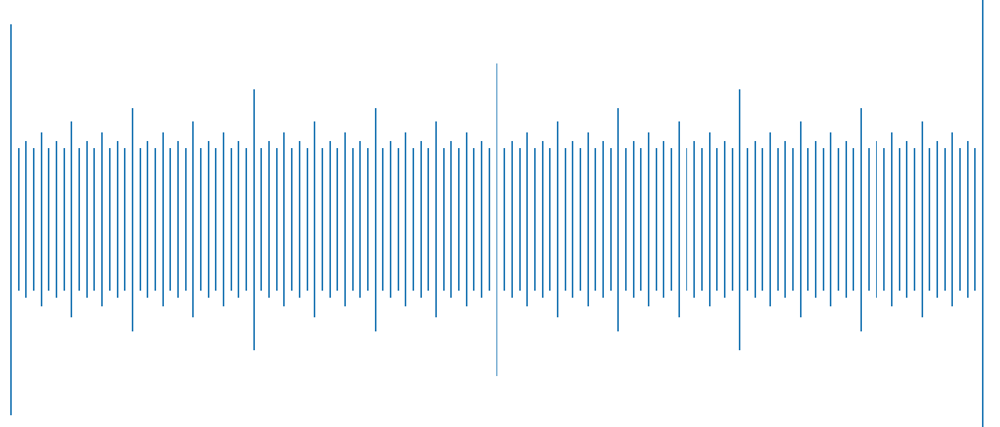
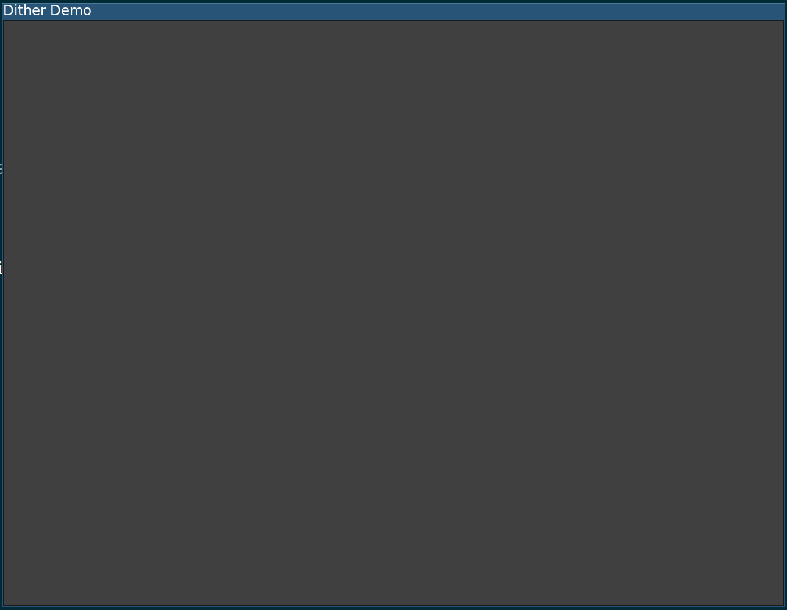

Everything in computers, fundamentally, relies on 1s and 0s, and there are many phenomena that will be mysterious and cryptic if one forgets (or never truly understands in the first place) this fact. One very important result of the binary nature of computers is that continuous values simply do not exist. Floating point numbers can represent non-integral numbers, but they are still discrete, and the CS gods bestow many misfortunes on those who treat doubles as "essentially the real numbers". One would be best served by instead viewing numeric values in computers as representations of ranges. Integer value of 1? The actual number is anywhere in the range \([1, 2)\), and thus \(\mathtt{0\mathrm{x}00000001}\) in 2s complement represents \([1, 2)\), rather than 1.
Figure 1: Single-precision floating-point values in \([1000.125, 1000.250]\)
Note the gaps between values! (figure made with this)
You might be saying at this point, "Okay, that's cool I guess... but what does that have to do with the fact that the lighting in my game creates banding?". The problem is that the standard 24-bit "true color" representation of colors―which uses 8 bits for the red, green, and blue channels―is definitively not "essentially all of the colors". Take, for example, all the different shades of gray we can display using 24-bit color. This is the set \(\{(n, n, n)~|~0 \leq n \leq 255\}\), where the components of this 3-tuple represent the red, blue, and green channels, respectively. In short (or rather, in char), we have only 256 different shades of gray available to us. That means that a gradient from white to black over 1024 pixels will not actually look like a gradient, but will instead appear as 4-pixel bands of gray (which will give us Mach bands as an added bonus). Let's look at a small example to make this more concrete.
Let's assume you have a program that displays a rectangle. It looks something like this:  Well that looks alright as far as plain gray rectangles go, but it's not winning any beauty pageants. Let's try having the rectangle fade to black as we move towards the bottom of the screen
#version 330
out vec4 outputColor;
void main()
{
vec4 texColor = gAddColor
+ gMultColor * texture(gSampler, vec2(texCoord0.s, texCoord0.t));
outputColor = mix(gTopMultiplier,
vec4(1, 1, 1, 1),
gl_FragCoord.y/960);
}